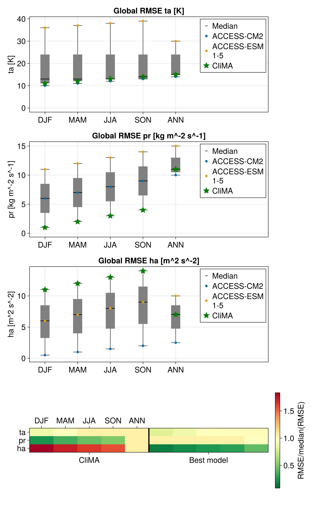

Visualizing RMSEVariables
Instead of computing summary statistics, it may be more helpful to plot a box plot or a heatmap. ClimaAnalysis provides the functions plot_boxplot! and plot_leaderboard! to help visualize the root mean squared errors (RMSEs) in a RMSEVariable.
The function Visualize.plot_boxplot! makes a box plot for each category in the RMSEVariable. The best model and worst model and any other models in model_names are plotted. When finding the best and worst single models, any models in model_names will be excluded. The category to find the best and worst model defaults to "ANN", but can be changed using the parameter best_and_worst_category_name.
The function Visualize.plot_leaderboard! makes a heatmap of the RMSEs between the variables of interest and the categories. The best model for each variable of interest and the models in model_names are shown in the heatmap. Similar to plot_boxplot!, the category to find the best model defaults to "ANN", but can be changed using the parameter best_category_name. The values of the heatmap are normalized by dividing over the median model's RMSEs for each variable.
import ClimaAnalysis
import CairoMakie
# Plot box plots
rmse_vars = (rmse_var_ta, rmse_var_pr, rmse_var_ha)
fig = CairoMakie.Figure(; size = (800, 300 * 3 + 400), fontsize = 20)
for i in 1:3
ClimaAnalysis.Visualize.plot_boxplot!(
fig,
rmse_vars[i],
ploc = (i, 1),
best_and_worst_category_name = "ANN",
)
end
# Plot leaderboard
ClimaAnalysis.Visualize.plot_leaderboard!(
fig,
rmse_vars...,
best_category_name = "ANN",
ploc = (4, 1),
)
CairoMakie.save("./assets/boxplot_and_leaderboard.png", fig)